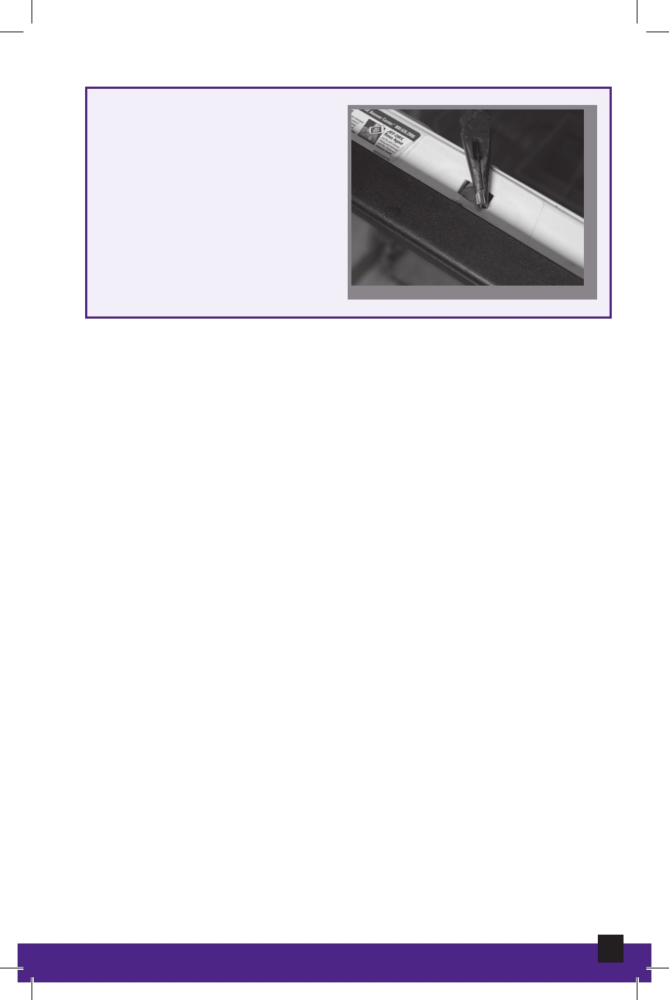

Door Switch
Most units also have a
door latch (switch) that
must be closed for the
unit to run.
Door Switch
Drain Hose
Allows dirty water to exit the machine. Most drain hoses are
connected to the garbage disposal under the kitchen sink,
and they must have an air gap to prevent dirty water from
returning to the machine.
Heating Element
Heats water in the dishwasher to 140 degrees Fahrenheit
for sanitation purposes during the wash cycle, and also
dries the dishes during the dry heat cycle.
66
Appliance Maintenance and Repair